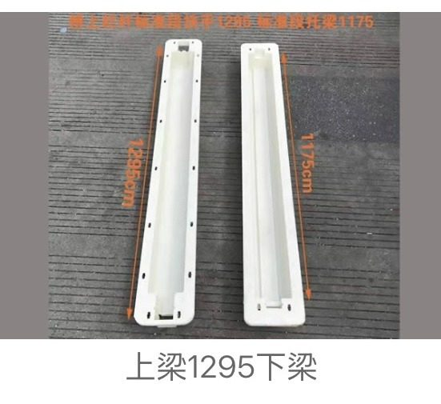

Where these moulds are used
Railway lines, metro construction, rail transit stations, cable trough systems, drainage channels, utility corridors, cover slabs and precast infrastructure upgrades
Main product scope
Railway cable trough moulds, rail drainage channel moulds, concrete cover slab moulds, metro utility component moulds and custom rail transit precast component moulds
Customization details to confirm
- Finished component size and section drawing
- Component type: cable trough, drainage channel, cover slab, utility part or custom precast component
- Installation environment: railway line, metro station, maintenance corridor or utility section
- Marking, logo, letters, lifting hole, groove, rib or embedded-part requirements
- Quantity, destination country and project schedule
OEM and material notes
Zhihua can review standard catalogue options or custom mould feasibility from drawings, dimensions and sample photos. For custom plastic moulds, ABS, PP and PE are the main material options. Logo, letters and patterns can be customized when the mould structure allows.
Requesting a quotation
Prepare the finished product size, application, order quantity, target country, material preference and any drawing or sample photo. This reduces back-and-forth and helps the factory review feasibility faster.